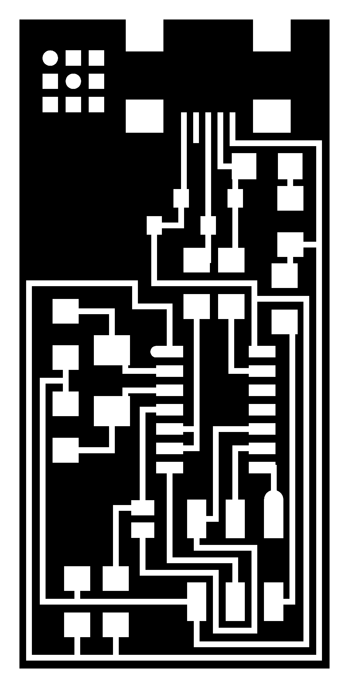

Electronics Production
Using a CNC to create a PCB
This Week's Assignment:
The assignment for this week is to create a board and programme it. See detail here.
-
Making a board
using fabmodules.org as explained in class for one of the boards listed.
- Tutorial to watch
Tooling to use
Endmill
1/64 endmill and 1/32 endmill
Make sure you have the fr1 boards
use Roland mill or other millSolder electronic part
Programming
Using a CNC to make a PCB
Our Lab CNC is in for repair so I went to MakerSpace North, located in the Capital. Darcy White, a maker and friend was kind enough to help and show me how their home made machine worked.
Using the fab module
Using the fab module was amazingly easy! I downloaded the PNG file (interior of the PCB) and uploaded to the fab modules web page. In the different drop down I chose PNG for input, nc for output format and PCB traces (1/64) for processs
Interior tracing line
So I used a v-carve endmill to trace the PCB because we did not have it in hand. It worked well and made cleaned cut. I change the endmill to cut the contour using the 1/32 inch as suggested by the instructor.
Exterior cutting line

Because the fab module was in mm/sec unit for different imput, I needed to convert it with the different number this specific CNC use which was in inch per minute. Darcy told me I can use Google search bar to convert my unit!!! See below :
Fab modules .NC output file looked like this. Basically I learned that this file is telling how to trace from point a to b, b to c which direction, how high the end mill should get up and dow from a stop point to another start point etc...
Zeroing the machine
We put the endmill on top of the place and on the corner we wanted. Preview it in the March3 application and press button for X, Y and z axes before starting the job. We made a second one in case there is a problem with soldering.
Here is an article Darcy made of our work on his blogue.


Soldering FabISP
Electronic parts from Digikey just arrived and I will sodder the PCP tomorrow, Wenesday 24th 2016. I forgot to order surface mount resistor and different component was missing. It was hard to find the different component on Digikey, espacially when in the tutorial is was not directly linked. So I ordered all component from Digikey. Everything was there except the 12 MHz crystal (Digi-Key), and 18 pF capacitors for the crystal (Digi-Key) Which I found the link on this older tutorial.
List of components are here
I solder the PCB with solder paste following the steps mentionned in the class tutorial.and used the heat gun to heat up the paste. Much easier than trying to solder with the solder wire. I used the solder only to unbridge where there were too much paste and in some case, I had to use the quick braid to desolder as shown below.


Programming FabISP
While waiting for my electronic pieces, following the tutorial I downloaded the necessary software in the app store for programming the isp on my mac
For mac
- Download and Install Crosspack AVR - Has an installer.
- Get Make XCode from the Apple App store.
- FabISP Firmware for MacOS 10.8.2

Everything was going fine until I need to set the fuses so your board will use the external clock (crystal), see terminal error bellow. I am using the Atmel-ICE Basic, perhaps I have not set the make file ISP properly... waiting for hel with my instructor...


I realised I made a mistake and sodder a resonator instead of the crystal. I have changed it but I still have the same error. I have add more sodder to the six pin as suggested by student Brandi at fab lab Tulsa. I am now making another one.
So I made a third one and programmed it with arduino, with a lot of zenitude as Mathieu Laverne would put it: "Set your brain to rest, and muster your nerves for this is not an intellectual challenge but requires a certain Zen attitude. No thinking required, just build an ISP [In-System Programmer] → mill the board, stuff it with components and program it."
Programming worked fine the first time using the DFROBOT USBtiny - Arduino Bootloader Progrmmer part no DFR0116. Surprizingly my first board was programmable too! I suspect that is because there were a major update of Xcode 7.3.

Note on AVRDUDE command line tool :
http://www.nongnu.org/avrdude/user-manual/avrdude_4.html